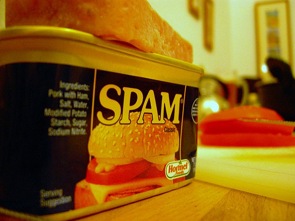
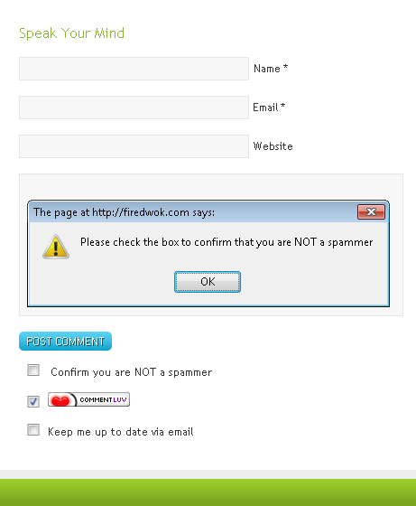

Earlier we shared 5 plugins for implementing captcha in WordPress comment form, However due to the fact that people are more likely not to comment on captcha enabled blogs, which result in less number of comments on your blog. We come-up with an alternative solution.
Image Credit: http://flickr.com
In this tutorial, we discussed an alternative of captcha, a plugin called GASP (Growmap Anti spambot Plugin). This plugin adds a checkbox at the end of the comment form, which needs to be checked in for submitting a comment. The check-box is not visible to the bots, which prevents the comment submission from a software/bots. This is how it looks once setup properly on your blog.

As you can see in the above screenshot that until unless the checkbox – “confirm you are not a spammer” is not checked in, the comments are not getting submitted. For a human it takes a moment to check this box compared, which is much more easier than filling an annoying CAPTCHA.
If you like this plugin and wanna implement it on your blog then download it from the below link, install it on your blog and activate it.
This plugin has been developed by Andy (developer of comment luv plugin). Here is the introduction video of Growmap Anti Spambot plugin. Do watch it if you are still not convinced to use this plugin.
Let us know which plugin are you using in order to avoid spam comments on your blog and which method would you prefer captcha or GASP. Do share you thoughts via comments!!
Hi Chaitanya
I have seen your good guest post over at comluv.com, I thought I should check out your site. It’s nice and very informative.
Just the first visit and I already found what I have been looking for, this plugin that enables a checkbox under my comment form. Thanks bro! Lately akismet let a lot of spam in, but fortunately I have my blog to notify me if a commenter has a link inside a comment. But those email are boring!
Thanks man, I’ll add this plugin on all my blogs!
Hi Siya, Good to know that you find it useful. GASP is really an awesome plugin, it’s a good alternative of captcha plugins.
Oh, it only works on word press, oh well, thanks anyway…